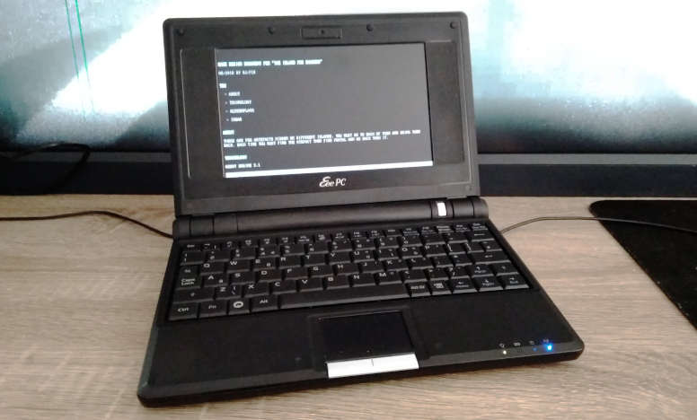
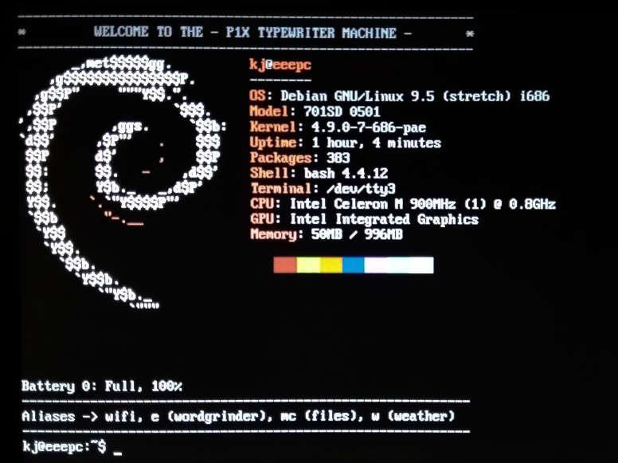

Resurecting an EEE PC Netbook with Debian
I bought an classic ASUS EEE PC 701SD.

I tested a few distributions and desktop environments but with no luck. Mostly because this computer have only 1GB ram and old Celeron 900Mhz. On that kind of machine everything runs slow. By default. But this is a GNU/LINUX. It works on everything. So I changed my approach to this problem. Instead of searching for faster distro I first decide what I need in terms of software.
My ultimate goal is to have small Linux computer with good keyboard (mechanical) for remote writing. Closes to this dream is freeway writer. But it's expensive and very, very limited. EEE PC + external keyboard seems close enough.
Thinking from this perspective I could run just any Linux with decent word-processor. And the best word-processor I know and love is wordgrinder. A terminal application. Then why I even need a desktop in the first place? It turns out that was the answer to most of my problems (with low spec computers).
I put Debian 9.5 minimal install on the EEE PC. Terminal only. And then, using apt install only the necessary applications. What did I choose?
Essentials:
- wicd, wicd-daemon wicd-curses; for connecting to WiFi
- mc; for file/dir management
- htop; process monitor
- git
- wordgrinder; to write this post
- ltp; power management for laptops
- woof; for simple file sharing over the local network
- acpi; for battery info
- links; for web browsing, duckduckgo/wikipedia
Additional:
- ncdu; Disk Usage utility, useful for small storages
- neofetch; for cool info about the system
- figlet; for generating huge text banners, useful for scripts
- ansiweather; for easy weather forecast
- vrms; just to be sure the RMS is proud of me ;)

This setup cost me less than 1GB of storage. I made some scripts to mimic desktop environment. Instead of icons for most used apps I have aliases. For windows I have [alt]+[arrows] that works like [alt]+[tab]. And each app/terminal is in full-screen non-distraction mode by default :)
For wikipedia and some basic duckduckgo stuff Links is enough I need.
And beside the OS, the hardware itself is small, quiet and just cute.
Tags: linux